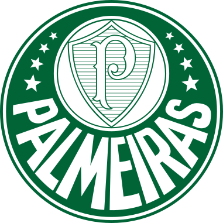
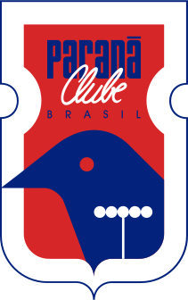
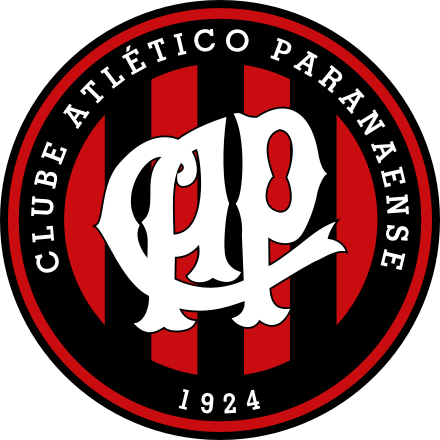
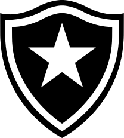
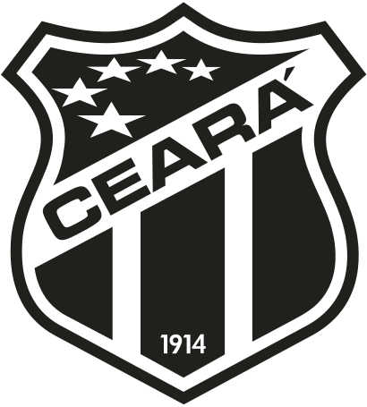
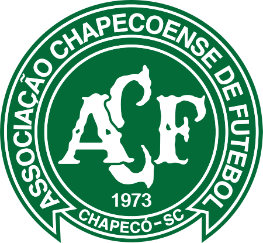
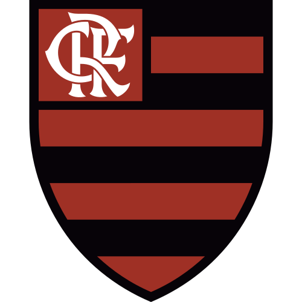
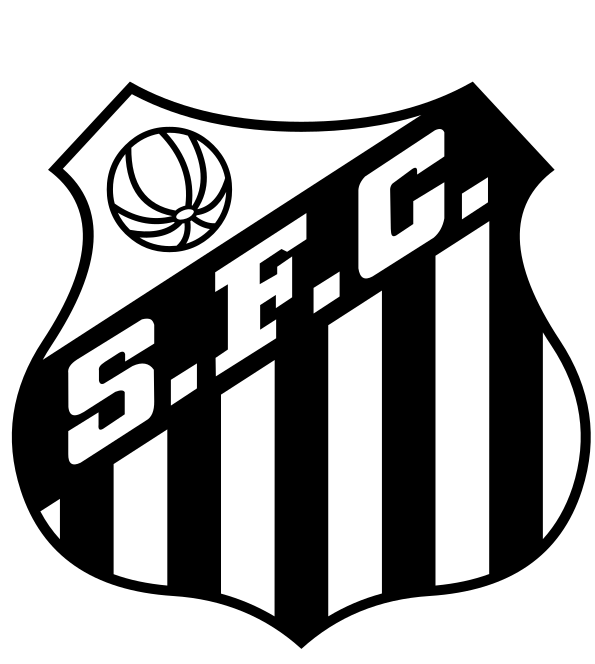

Brazilian Championship 2018
The 2018 Brazilian Championship Series A (officially the Brasileirão Assaí 2018 for sponsorship reasons) is the 62nd season of the Brazilian Championship Series A, the top level of professional football in Brazil, and the 15th edition in a double round robin since its establishment in 2003. The season began on 14 April 2018 and is scheduled to end on 2 December 2018. The top six teams as well as the 2018 Brazil Cup will qualify for the Copa Libertadores. The next six best-placed teams not qualified for Copa Libertadores will qualify for the Copa Sudamericana and the last four will be relegated to Serie B in 2019. Corinthians were the defending champions
GRE

3x0

INT
PAL

2x1

PAR
AME
0x0

ATL
CAP

1x2

BAH
BOT

3x1

CEA
CHA

2x0
COR
CRU
2x3

FLU
FLA

0x0

SAN
SAO

2x3

SPO
VAS
4x1

VIT